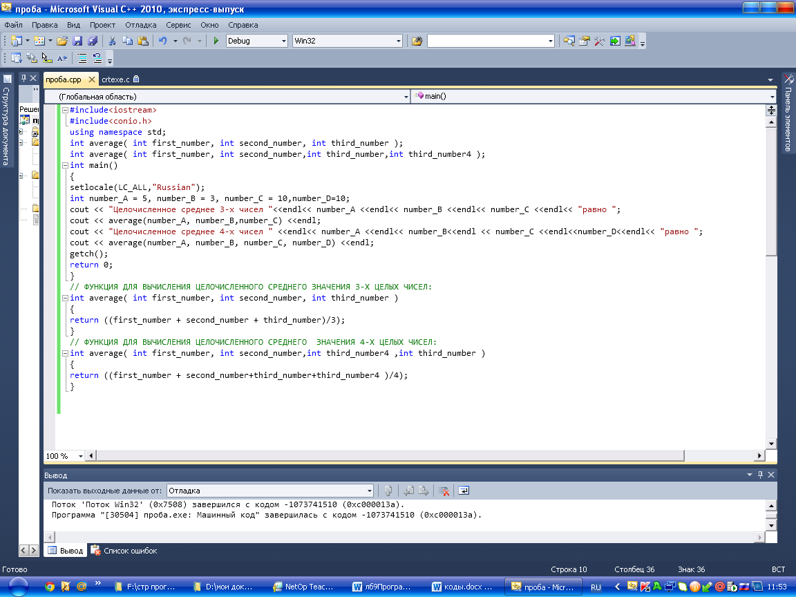

Лабораторная работа № 8
Программирование с применением перегрузки функций
Цель работы: Разработка программ с применением перегрузки функций и значений параметров по умолчанию.
Материальное обеспечение: Компьютерное оборудование и программное обеспечение.
Краткие теоретические сведения
Часто бывает удобно, чтобы функции, реализующие один и тот же алгоритм для различных типов данных, имели одно и то же имя. Использование нескольких функций с одним и тем же именем, но с различными типами параметров, называется перегрузкой функций. Компилятор определяет, какую именно функцию требуется вызвать, по типу фактических параметров. Перегрузка функций позволяет программам определять несколько функций с одним и тем же именем и типом возвращаемого значения. В процессе компиляции C++ принимает во внимание количество аргументов, используемых каждой функцией, и затем вызывает именно требуемую функцию. Перегрузка функций достаточно удобна и упрощает работу программ. Одним из наиболее общих случаев использования перегрузки является применение функции для получения определенного результата, исходя из различных параметров.
Использование значений параметров по умолчанию.
C++ позволяет с помощью параметров передавать информацию в функции. Также C++ обеспечивает перегрузку функций, предусматривая определения, содержащие разное количество параметров или даже параметры разных типов. Кроме этого, в C++ при вызове функций можно опускать параметры. В таких случаях для опущенных параметров будут использоваться значения по умолчанию. Обеспечение значений по умолчанию для параметров упрощает возможность повторного использования функций.
Чтобы обеспечить значения по умолчанию для параметров функции необходимо просто присвоить значение параметру с помощью оператора присваивания прямо при объявлении функции.
Задание значений по умолчанию
Когда определяете функцию, C++ позволяет вам указать значения по умолчанию для одного или нескольких параметров. Если программа в дальнейших вызовах этой функции опускает один или несколько параметров, то функция будет использовать для них значения по умолчанию. Чтобы присвоить параметру значение по умолчанию, просто используйте оператор присваивания внутри определения функции. Когда программа опускает один параметр, она должна опускать все последующие параметры.
Методический пример:
Написать программу, которая, используя перегрузку функций, вычисляет среднее значение трех и четырех переменных.

Варианты заданий:
1.Написать программу, которая, используя перегрузку функций, вычисляет среднее значение двух и трех переменных.
2.Написать программу, которая, используя перегрузку функций, вычисляет сумму двух и трех переменных.
3.Написать программу, которая, используя перегрузку функций, вычисляет сумму трех и четырех переменных.
4.Написать программу, которая, используя перегрузку функций, вычисляет умножение двух и трех переменных.
5.Написать программу, которая, используя перегрузку функций, вычисляет умножение трех и четырех переменных.
6.Написать программу, которая, используя перегрузку функций, вычисляет деление двух и трех переменных.
7.Написать программу, которая, используя перегрузку функций, вычисляет деление трех и четырех переменных.
8.Написать программу, которая, используя перегрузку функций, вычисляет среднее значение двух и четырех переменных.
СРС
Выполнить практическое задание:
Написать программу, которая присваивает значения по умолчанию заданной функции. Если внутри этой функции имеются 3 переменные с конкретными значениями. (Допустим, значения по умолчанию равны: x=10, y=15, z=25). Данная функция должна вызываться 3 раза.
üВ первом случае она должна передавать первый и второй параметр.
üВо втором не передавать ни один параметр.
И в третьем случае передавать все 3 параметра.
Порядок выполения работы:
1.Изучить теоретические сведения по данной лабораторной работе.
2.Составить программу для заданного варианта.
3.Записать программу на языке Visual C++.
4.Отладить программу.
5.Продемонстрировать работу программы на ПК для заданного варианта.
Содержание отчета:
1.Тема и цель работы.
2.Вариант задания.
3.Листинг и результат программы.
4.Контрольные вопросы.
Контрольные вопросы:
1.Для чего необходима перезагрузка функций?
2.Перегрузка функций упрощает или усложняет программирование?
3.Перезагруженные функции должны возвращать значения одинакового или разного типа?
4.Если программа опускает значения параметров при вызове функции, то какие значения необходимо использовать?
Литература:
1.Хортон А. Visual 2010: полный курс.:Пер. с анг.-М.:ООО «И.Д.Вильямс», 2011г , 1216 с.: ил.
2.Пахомов Б.И. С/C++ и MS Visual C++ 2010 для начинающих. – СПб.:БХВ-Петербург, 2011.-736 с.:ил.
3.Зиборов В. В. MS Visual C++ 2010 в среде.NET. Библиотека программиста. — СПб.: Питер,
2012. — 320 с.: ил.
4.Прохоренок Н.А. Программирование на С++ в Visual Studio 2010 Express, - СПб.: Питер, 2011г , 71 с.: ил.
5.Степаненко О.Е. VisualC++.NET.Классикапрограммирования.:-М:Научнаякнига,К.;Бу-кипист,2010.—768с.